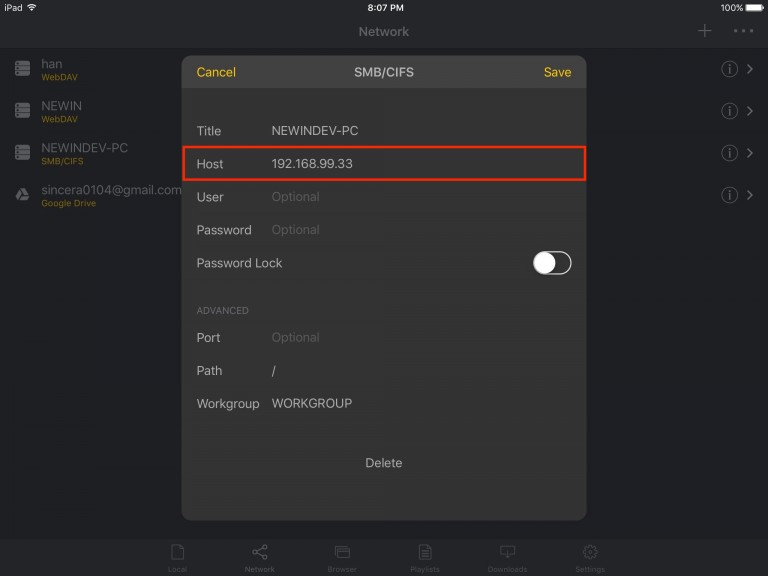
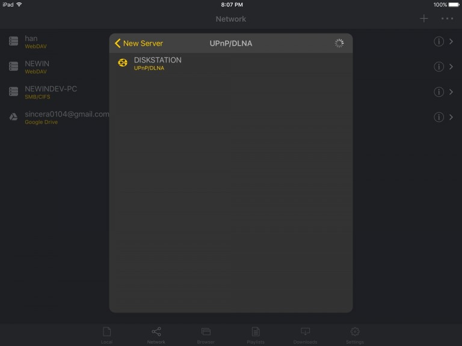

周末那部压箱底的老电影，终于在客厅沙发上看清了
把珍藏多年的 NAS 老片从灰尘里翻出来，却卡在投屏、解码、偏色三重麻烦上。直到 nPlayer 把这些折腾一步全摆平。
周六下午三点，阳光斜斜从阳台窗照进来，我盯着电视那块乌泱泱的屏幕叹气。
硬盘里躺着一部压了三年的老动画剧场版，当初从论坛下的 1080p 原片，MKV 封装，内嵌 DTS 音轨，字幕是外挂的 SRT 文件。本来想拿 iPad 投到电视上陪老婆看——结果 iPad 自带播放器播不了 DTS，AirPlay 过去画面出来了但只有杂音；换 VLC 倒是能播，可 iPad 上 VLC 控制投屏经常断流，而且电视那边死活识别不了外挂字幕。折腾了快一个钟头，老婆已经回卧室刷小红书了。
我翻出手机在朋友群里吐槽，一个搞 NAS 的哥们回我四个字：装 nPlayer。然后补了一句，别下 Lite 版，标准版够用，Plus 版的杜比音效处理才是宝藏。
从哪来，怎么装
我习惯性先去nplayer官网看了一眼定价。三个 iOS 版本摆在那里——免费的 Lite 带广告、标准版中等价位、Plus 版稍贵但多了内置 Dolby 音效处理。哥们说的对，标准版的核心解码能力和 Plus 是一样的，DTS 和 Dolby AC3/E-AC3 都有官方授权，对我这种主要看老片 DTS 音轨的人来说完全够用。Plus 版的杜比全景声环绕声处理确实诱人，但我家电视就是个普通 2.1 声道音响，暂时没必要多花那份钱。
nPlayer 在 Android 上也有，不过我目前主力是 iPad 加 Apple TV 的组合，iOS 标准版就够了。macOS 是独立版本，要单独在 Mac App Store 买，我没这需求所以没细看。Lite 版留着给想先体验的朋友用倒是不错——免费又带完整核心功能，顶多有点广告，满意了再升级付费版。
安装包从官方下载拿就行，iOS 直接 App Store 搜。装好打开，界面是那种很克制的深色风格，底部四个标签：本地、网络、相册、设置。我当时没急着看本地文件，因为片子根本不在 iPad 上。
第一步：让 nPlayer 看见我的 NAS
片子存在群晖 NAS 的共享文件夹里。nPlayer 支持 SMB、UPnP、WebDAV 三种方式连 NAS，我选了最简单的 SMB——群晖默认就开着。进「网络」标签，点右上角那个加号，选「SMB」，填 NAS 的局域网 IP、共享文件夹名、账号密码，几秒就连上了。
连上之后更惊喜的事情来了：nPlayer 不只是能看见 NAS 里的视频文件，云盘也能直接挂进去。Box、Dropbox、OneDrive 这些主流的，OAuth 一键授权就能浏览流式播放甚至下载到本地。我云盘里还有一堆之前囤的纪录片，这下也不用先同步到 NAS 了。Google Drive 好像最近版本移除了，但可以走 WebDAV 接入，不影响。

第二步：投屏到电视，这次要带字幕
片子在 iPad 上能播了，字幕也自动挂载了——nPlayer 对外挂字幕的识别很准，SRT、ASS、SSA 都支持，甚至能调字幕的字号、颜色、描边。但投屏还是个事。
nPlayer 内置了 UPnP/DLNA 投屏，也有 AirPlay。我先试了 AirPlay——走 Apple TV 输出，nPlayer 在 iPad 端保持控制权，播放进度、字幕全在 iPad 上操作，电视只负责显示。这次没断流，DTS 音轨也正常解码了，老婆从卧室里听到声音出来看了一眼，又回卧室继续刷小红书了。
UPnP 也试了一下，适合投给家里那台老的小米盒子。UPnP 的特点是推送过去之后控制权在电视那边，nPlayer 不能远程调进度，而且字幕可能跟不过去——取决于电视本身的解码器。所以 UPnP 我一般只投图片做家庭幻灯片用，视频还是走 AirPlay 更稳。

第三步：屏幕反光和老片偏色怎么办
片子是 2012 年的老剧场版，颜色本来就偏暗，客厅下午的阳光又晃得屏幕一块亮一块暗。nPlayer 的色彩调节面板解了燃眉之急——亮度、对比度、饱和度、色度四个参数全是滑块，实时预览。亮度往上拉了 15%，对比度调高 10%，饱和度加了一点点，人物的暗部细节一下子就出来了。
还有更精细的：色彩空间切换。老片是 SD 年代的 BT.601 标准，而 nPlayer 默认按 BT.709 高清标准渲染——切回 BT.601 之后偏黄的肤色立刻纠正过来。这个细节让我印象挺深，很多播放器要么不提供色彩空间切换，要么切了之后画面崩得一塌糊涂。后来去nplayer文档翻了一下才知道，它在视频调校这块能挖的东西还多着呢。
尾声
那天下午三点半到六点，我和老婆窝在沙发上完整看完了那部剧场版。片尾字幕滚完的时候，iPad 上的 nPlayer 还停在进度条 100% 的位置，缓存都没占用多少——因为片子从头到尾没下载到本地，全是走 NAS 流式播放的。
事后我发现它的功能远不止我这次用到的这些。DTS Headphone:X 耳机环绕声、网络流媒体直接播、云盘文件下载到本地离线看、图片幻灯片带转场效果……每一个拉出来都够写半篇。
不过对我来说，这一趟折腾最值得的收获倒不是播放器本身，而是发现了一个道理：很多看起来「设备兼容不了」的问题，其实只是选错了工具。iPad 自带播放器播不了 DTS 不是 iPad 的错，是苹果不想给版权费；AirPlay 断流不是 Apple TV 的锅，是 VLC 在 iOS 上实现得不够扎实。nPlayer 把这些零散的坑都填上了，让我把注意力放回到片子本身。
如果你家里也有压箱底的老片等着被翻出来，或者云盘 NAS 里的东西一直懒得整理到本地，nPlayer 值得花那点钱试试。文档维护团队同时在GitHub、Gitee和GitCode三个平台同步了资料，国内访问哪个顺手就用哪个。